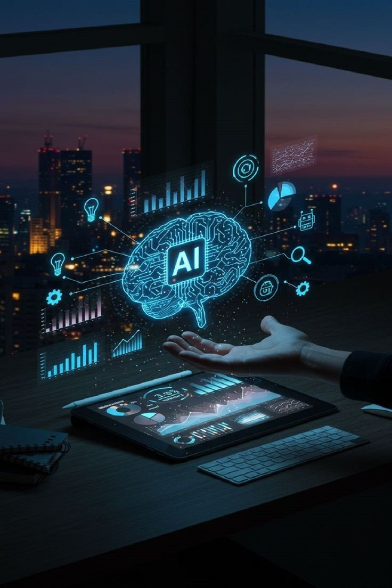

Technology has become one of the most powerful forces shaping the 21st century. From smartphones and artificial intelligence to cloud computing and cybersecurity, technological innovation continues to transform how people live, work, learn, and communicate.
The Rise of Artificial Intelligence
Artificial Intelligence (AI) is one of the most revolutionary advancements in modern technology. AI systems can analyze data, recognize patterns, and make decisions with minimal human intervention. Today, AI powers voice assistants, recommendation systems, medical diagnostics, and even autonomous vehicles.
Businesses use AI to improve efficiency, reduce costs, and enhance customer experience. In education, AI-driven tools personalize learning. In healthcare, machine learning models help detect diseases earlier and more accurately.
Cloud computing has changed how organizations store and access data. Instead of relying on physical servers, companies use cloud platforms to host applications and manage information remotely. This has increased flexibility, reduced hardware costs, and improved collaboration.
With cloud services, startups and small businesses can now access powerful computing tools without large upfront investments. Remote work has also become more efficient due to cloud-based collaboration platforms.

The future of technology promises even greater integration between digital systems and everyday life. Automation may reshape industries, quantum computing could revolutionize data processing, and biotechnology advancements may redefine healthcare.
However, with innovation comes responsibility. Ethical considerations, data privacy, and digital inclusion must remain priorities to ensure technology benefits society as a whole.
In conclusion, technology is not just about gadgets and machines—it is about progress, opportunity, and the continuous transformation of human potential.